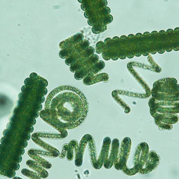
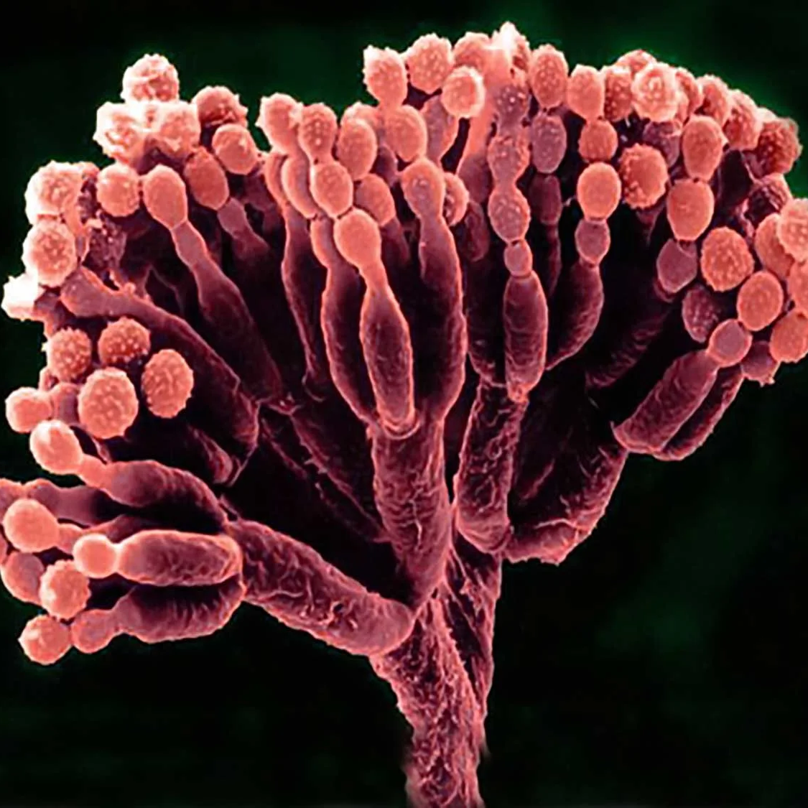
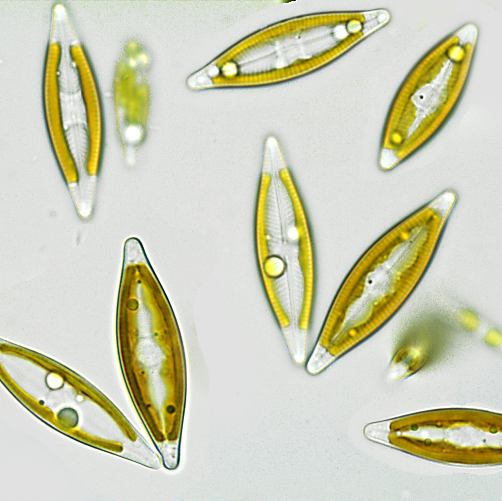
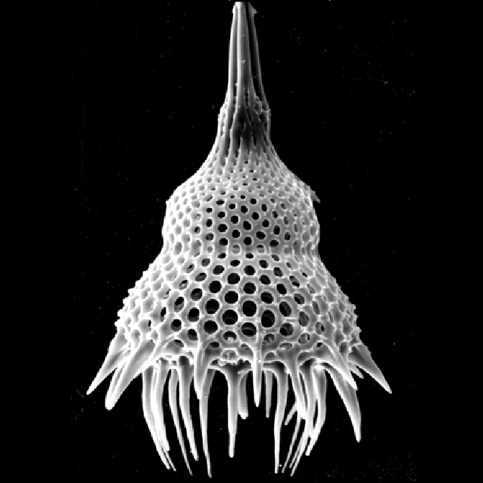
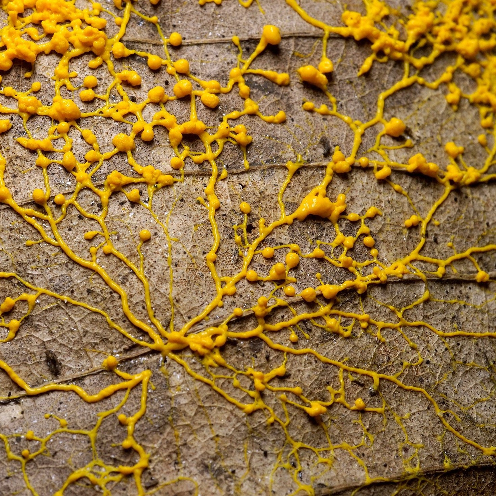
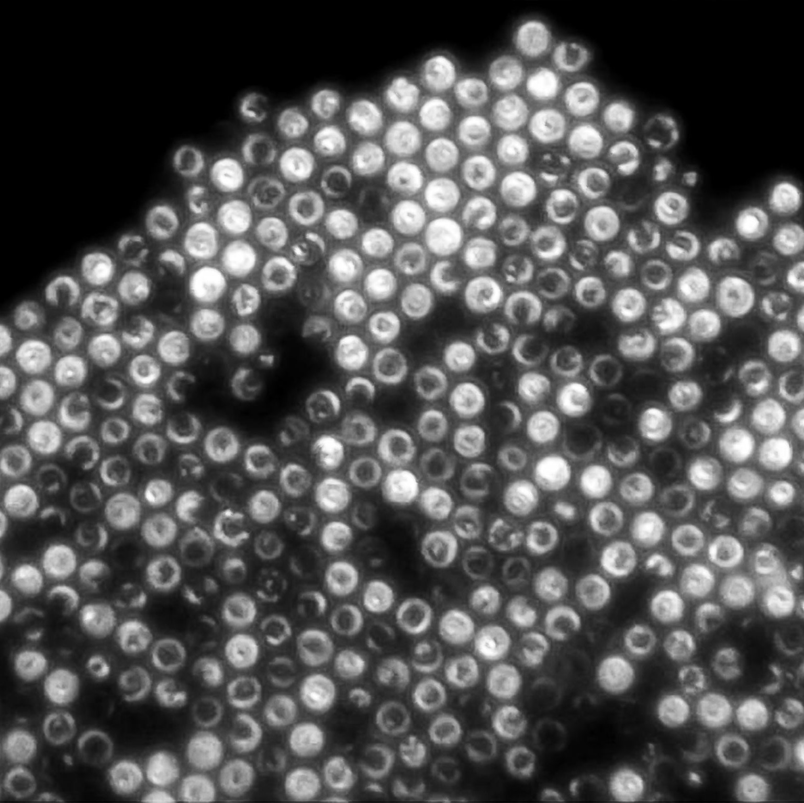

Spirulina are a type of cyanobacteria that many consume for the nutrients it provides, and is considered a superfood. On top of being a great green pigment for biomaterials, its spiral form is quite interesting to observe.

Penicillium is an ascomycota, a fungi that produces ascospores, is best known for its production of the antibiotic penicillin, which brought huge strides to the medical industry. Apart from this, it is a common bread mold that also serves well in chesse-making.

Navicula are a common diatom, a type of algae found in oceans. They played a critical role in oxygenating Earth's atmosphere in the early stages of life. Navicula are boat-shaped, symmetrical, and are capable of moving across flat surfaces.

Lamprocyclas Maritalis is a radiolarian, which are known to make shells out of silica, or glass, for their forms. A famous taxonomist, Ernst Haeckel, who created magnificent art of Radiolarians, the larger class of Rhizaria, and other living things, as a method of educating the public.

Slime molds have been difficult to classify for scientists. They have been readily studied for their efficiency in finding food when grouped together, expanding out and then abandoning paths behind that were fruitless with a residue. Their inner fluids pulse quickly, sending information throughout the slime mold as if it has a nervous system.

Thiovulum majus bacteria are known for their speed and spinning motility. Physicists have gained interest in them because they often form tight, happenstance crystals when the bacteria spin themselves into stable patterns and shapes.